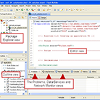

One Codebase, Multiple Devices
[]
Flex - Now with the power of the Apache Community
[]
Utilize the tooling, workflow, and experience you already have
[]

Apache Flex SDK 4.15 has been released!
[]
Licensing
Apache Flex® is completely open-source. Apache Flex® is an Apache project, and is released under the Apache License, version 2.0, so you know it is compatible with your business needs. Plus, it is backed by the Apache Community for updates, support and help.
Read More
Desktop & Mobile Apps

Build applications that target all browsers by leveraging the Adobe Flash Player and JavaScript, make desktop application by leveraging the Adobe Integrated Runtime (Adobe AIR) or create powerful, cross-platform mobile applications that target Apple iPods, iPhones, iPads, Android based smartphones and tablets, and Blackberry Playbook devices.
Read More
Flex Showcase
A selection of the many desktop and mobile applications written with Flex.
Proud of your Flex application? You can easily submit a request to have it shown here.
Read More
Tooling
Utilize the tools you are already familiar with. Apache Flex® utilizes MXML for layout and AS3 (an ECMAScript based language like JavaScript) for coding. Use the Eclipse-based IDEs like Adobe Flash Builder and FDT or use IntelliJ IDEA or any text editor to make your applications.
Read More
FlexJS - An Introduction
FlexJS™ is a new application development framework that cross compiles MXML and ActionScript into HTML and JavaScript. It runs in web, desktop and mobile(app) in swf format and runs in browser based environments as HTML/JS/CSS files without the need for the Flash Player plugin. It brings the advantages of Flex to the JavaScript world.
The Flex in a Week Series

The Flex in a Week training series consists of videos and exercises to teach experienced programmers how to program using the Flex 4.5 framework and Flash Builder 4.5. To gain the most from this series, watch the videos and complete the exercises in the order in which they are listed.
Flex In A Week Video Series
The Flex in a Week video training course will help you understand how you can leverage the open source Flex framework to build RIAs. To make it easier for you to learn Flex, you will use the Eclipse-based Flash Builder 4.5 development tool, which includes the Flex framework and provides features such as intelligent coding, interactive step-through debugging, and visual design of the user layout.
Building interactive maps with Flex
It has never been easier to build interactive online maps with Flex. There is a wide range of APIs now available. The focus of this article is building a simple map application using the open-source Modest Maps Flex API. Modest Maps offers a number of advantages over other Flex mapping APIs including the ability to point at multiple basemap providers and direct access to the source code.
Latest News:
- 11 Apr. 2016: Apache FlexJS & FalconJX 0.6.0 Released Apache FlexJS 0.6.0 and Apache Flex FalconJX 0.6.0 were released. These tools allow ActionScript and Flex developers to create HTML based applications outputting to JavaScript. Install it now, or Read More Here
- 11 Jan. 2016: Apache Flex 4.15 Released Apache Flex 4.15 was released, which adds support for the latest Flash Player and AIR Runtimes, fixes several bugs and improves speed. Install it now, or Read More Here
- 11 Nov. 2015: Apache FlexJS 0.50 Released Apache FlexJS 0.50 This release includes some new components, updated integration with Apache Cordova, a few effect classes, and drag and drop support. Install it now, or Read More Here
- 31 Mar. 2015: Apache Flex 4.14.1 Released Apache Flex 4.14.1 was released, which corrects over dozen bugs and adds new, minor features. Install it now, or Read More Here
- 3 Jan. 2015: Apache Flex 4.14 Released Apache Flex 4.14.0 was released, and adds support for the latest Flash Player and AIR runtimes, promises, native support for tables in TLF, the Spark RichTextEditor component, FlatSpark skins and components, and iOS7 and Android 4.x mobile themes. Install it now, or Read More Here
- 3 Jul. 2014: Apache Flex 4.13 Released Apache Flex 4.13.0 was released, and adds support for the latest Flash Player and AIR runtimes, debugger support for ActionScript Workers, and over 30 bug fixes. Install it now, or Read More Here
- 3 May 2014: Apache Flex 4.12.1 Released Apache Flex 4.12.1 was released, and adds support for the latest Flash Player and AIR runtimes, improved memory and performance, improved mobile skins and iOS7 support and over 20 bug fixes. Install it now, or Read More Here
- 24 Apr. 2014: Apache FlexJS 0.0.1 and Apache Flex FalconJX 0.0.1 Released Apache FlexJS is a next-generation Flex SDK that enables developers to use MXML and ActionScript to not only create SWFs but also cross-compile the same MXML and ActionScript to HTML/JS/CSS so applications can run natively in browsers. Apache Flex FalconJX is a next-generation MXML and ActionScript cross-compiler. Read More Here
- 15 Apr. 2014: Apache Flex FlexUnit 4.2.0 Released Apache Flex FlexUnit is a JUnit style testing framework for Apache Flex applications. This is the first release of Apache Flex FlexUnit under the Apache Foundation. Read More Here
- 8 Mar. 2014: Apache Flex 4.12.0 Released Apache Flex 4.12.0 was released, and adds support for the latest Flash Player and AIR runtimes, improved memory and performance, improved mobile skins and iOS7 support and over 80 bug fixes. Install it now, or Read More Here